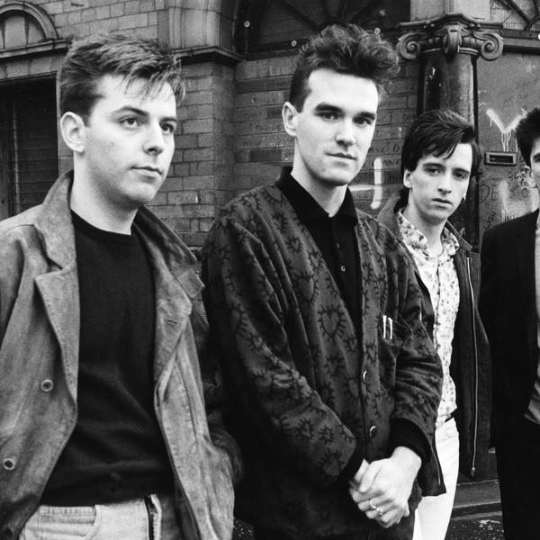

The Smiths

The Smiths, English rock band formed in Manchester in 1982
The Smiths were an English rock band formed in Manchester in 1982.
In just five years, the Smiths went from an indie pop outfit puttering around Manchester to one of the UK’s most successful, significant acts – and then, just like that, they were gone. Short as their time was together, the Smiths’ output was brilliant throughout their reign from 1982 to 1987, and now you can scroll through the highlights of their career in a new interactive timeline on the band’s website.